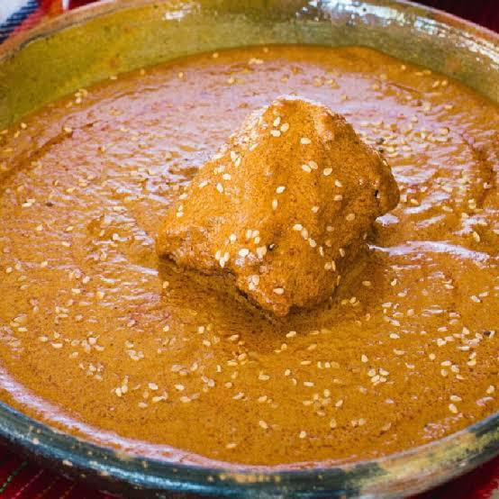
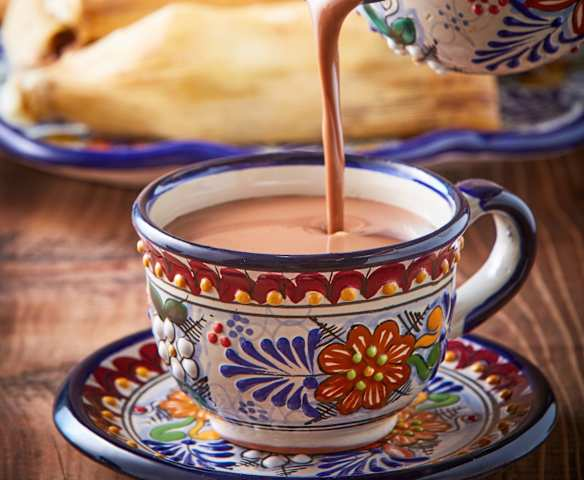

Sabores Típicos
Deléitate con los platillos más representativos de esta región.
- Mole dulce
- Mole salado
- Pipian 
- Gorditas de horno
- Duros
- Atole  El atole es una de las bebidas más tradicionales y reconfortantes de México, con una historia que se remonta a la época prehispánica. Es una bebida espesa, caliente y nutritiva, cuya base principal es el maíz.

El mole dulce es un platillo emblemático de la gastronomia mexicana, una salsa compleja y profundamente aromática que se caracteriza por su equilibrio entre sabores dulces y ligeramente picantes. A grandes rasgos, es una preparación muy laboriosa que combina una multitud de ingredientes tostados, molidos y cocinados lentamente hasta lograr una consistencia tersa y rica.
 Es una variante de mole
que, si bien puede contener un dejo de
dulzura de ciertos ingredientes, se inclina
más hacia un perfil de sabor robusto,
especiado, y a menudo picante. No es "salado" en el
sentido de llevar un exceso de sal, sino que
su complejidad de sabores se aleja del
dulzor predominante del mole poblano
tradicional.
Es una variante de mole
que, si bien puede contener un dejo de
dulzura de ciertos ingredientes, se inclina
más hacia un perfil de sabor robusto,
especiado, y a menudo picante. No es "salado" en el
sentido de llevar un exceso de sal, sino que
su complejidad de sabores se aleja del
dulzor predominante del mole poblano
tradicional.
El pipián es un platillo emblemático de la gastronomía mexicana, con profundas raíces prehispánicas. Se trata de una salsa espesa y rica, cuyo ingrediente principal son las semillas de calabaza (conocidas como pepitas), aunque también puede llevar otras semillas o frutos secos como ajonjolí, cacahuates o almendras.
 Las gorditas de horno son un platillo tradicional mexicano, un tipo de pan o tortita esponjosa y suave, diferente a las gorditas que se cocinan en comal o se fríen. Su nombre proviene de su característica cocción: en un horno de leña,
de adobe o de piedra, lo que les confiere un sabor y una textura únicos.
Las gorditas de horno son un platillo tradicional mexicano, un tipo de pan o tortita esponjosa y suave, diferente a las gorditas que se cocinan en comal o se fríen. Su nombre proviene de su característica cocción: en un horno de leña,
de adobe o de piedra, lo que les confiere un sabor y una textura únicos.
 Los duros de puerco, también conocidos simplemente como
chicharrones de cerdo, son una popular y crujiente botana mexicana, hecha a partir de la piel de cerdo. A diferencia de los "duros de harina" (que son frituras de trigo infladas), los duros de puerco son el producto de un proceso de cocción y fritura de la propia piel del animal,
lo que les confiere una textura y sabor inconfundibles.
Los duros de puerco, también conocidos simplemente como
chicharrones de cerdo, son una popular y crujiente botana mexicana, hecha a partir de la piel de cerdo. A diferencia de los "duros de harina" (que son frituras de trigo infladas), los duros de puerco son el producto de un proceso de cocción y fritura de la propia piel del animal,
lo que les confiere una textura y sabor inconfundibles.